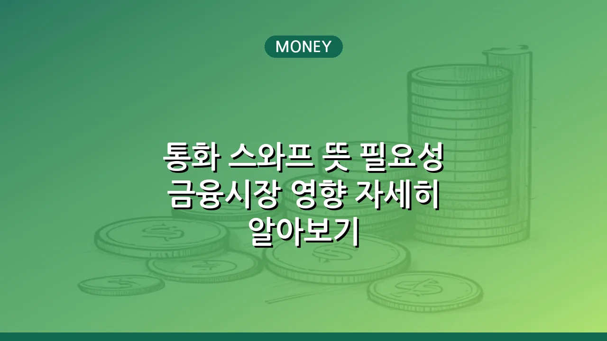

통화 스와프 뜻 필요성 금융시장 영향 자세히 알아보기
통화 스와프란 무엇인가요? 금융 시장의 안정 도구
통화 스와프는 국가 간 또는 금융기관 간에 서로 다른 통화를 일정 기간 동안 교환하고, 만기 시 미리 정해진 조건으로 다시 교환하는 금융 계약을 의미합니다. 이는 일시적으로 외화 유동성을 확보하거나, 환율 변동의 위험을 관리하고, 특정 통화의 자금 조달 비용을 절감하는 등의 목적으로 활용됩니다.
본질적으로 통화 스와프는 두 거래 당사자가 각자의 통화를 교환한 뒤, 계약 기간 동안 이자를 지급하고, 만기 시점에 최초 교환했던 원금을 다시 교환하는 방식으로 이루어집니다. 중앙은행 간의 통화 스와프는 주로 금융 시장의 외화 유동성을 공급하여 국가 경제의 안정성을 유지하는 핵심적인 안전판 역할을 합니다.
글로벌 경제 위기 속 통화 스와프가 필요한 이유
통화 스와프는 특히 글로벌 금융 위기나 경제 불확실성이 고조되는 시기에 그 중요성이 부각됩니다. 주요 통화(특히 달러)의 유동성이 부족해질 때, 통화 스와프 계약을 통해 안정적으로 외화를 공급받을 수 있기 때문입니다.
- 외화 유동성 확보: 자국 금융시장에 외화가 부족해질 경우, 중앙은행이 통화 스와프를 통해 상대국 중앙은행으로부터 외화를 빌려와 국내 금융기관에 공급함으로써 시스템 붕괴를 막을 수 있습니다.
- 환율 안정화 기여: 외화 유동성 부족이 심화되면 자국 통화 가치가 급락할 수 있습니다. 통화 스와프는 이러한 불안 심리를 진정시키고 환율 변동성을 완화하는 데 도움을 줍니다.
- 국제 무역 및 투자 지원: 안정적인 외화 유동성 공급은 기업들의 해외 결제와 투자 활동을 원활하게 하여 국제 무역 및 투자의 위축을 방지하는 효과가 있습니다.
- 국가 신뢰도 제고: 주요국과의 통화 스와프 체결은 해당 국가의 대외 건전성과 위기 대응 능력을 대외적으로 인정받는 효과를 가져와 국가 신뢰도를 높이는 데 기여합니다.
통화 스와프의 주요 종류 및 작동 방식
통화 스와프는 크게 중앙은행 간 통화 스와프와 상업적 통화 스와프로 나눌 수 있습니다. 각각의 목적과 참여 주체가 다르며 작동 방식은 기본적으로 유사합니다.
| 구분 | 중앙은행 간 통화 스와프 | 상업적 통화 스와프 |
|---|---|---|
| 주요 목적 | 외화 유동성 공급, 금융 시스템 안정화 | 환율 위험 헤지, 자금 조달 비용 절감 |
| 참여 주체 | 각국 중앙은행 | 기업, 금융기관 등 |
| 기간 | 단기 ~ 중장기 (위기 시점 조정) | 주로 중장기 |
| 발생 원인 | 금융 위기, 외환 시장 불안정 | 해외 투자, 외화 부채 관리 |
작동 방식은 다음과 같습니다.
- 최초 교환(Spot Exchange): 계약 시점에 두 당사자가 미리 정한 환율로 원금을 서로 교환합니다. 예를 들어, 한국은행이 미 연준으로부터 달러를 받고 원화를 제공합니다.
- 이자 지급(Interest Payments): 계약 기간 동안 각 당사자는 자신이 빌린 통화에 대한 이자를 상대방에게 지급합니다. 이 이자율은 계약 시점에 결정됩니다.
- 재교환(Re-exchange/Forward Exchange): 만기 시점에 최초 교환했던 원금을 다시 교환하며 계약이 종료됩니다. 이때, 최초 교환 시 적용했던 환율과 동일한 환율을 적용하는 것이 일반적입니다.
통화 스와프가 국가 경제에 미치는 영향
통화 스와프는 국가 경제에 다방면으로 긍정적인 영향을 미칩니다. 특히 대외 의존도가 높은 개방 경제 국가일수록 그 효과는 더욱 커질 수 있습니다.
- 금융 시장 안정성 강화: 외화 부족에 대한 우려를 해소하여 단기 자금 시장의 경색을 막고, 금융기관의 안정적인 자금 운용을 가능하게 합니다.
- 투자 심리 개선: 통화 스와프 체결은 금융 불안을 완화하고 경제의 불확실성을 줄여, 국내외 투자자들의 투자 심리를 개선하고 자본 유출을 방지하는 효과가 있습니다.
- 정부 및 기업의 신용도 향상: 안정적인 외화 확보 채널은 국가의 대외 신용도를 높여 정부와 기업의 해외 차입 비용을 낮추는 데 기여할 수 있습니다.
- 물가 안정 기여: 환율 급등을 방지하여 수입 물가 상승 압력을 억제하고, 전반적인 물가 안정에도 긍정적인 영향을 미칠 수 있습니다.
한국의 통화 스와프 현황과 중요성
한국은 과거 외환 위기를 경험하며 통화 스와프의 중요성을 절감했습니다. IMF 외환 위기, 2008년 글로벌 금융 위기 등 비상 시마다 통화 스와프는 국내 금융 시장의 안정판 역할을 톡톡히 해왔습니다.
현재 한국은 주요국과의 양자 통화 스와프와 다자간 통화 스와프(예: 치앙마이 이니셔티브)를 통해 금융 안전망을 구축하고 있습니다. 이러한 통화 스와프 계약들은 평상시에는 굳건한 대외 안전망으로서 기능하고, 비상시에는 즉각적인 외화 유동성 공급원으로 활용됩니다. 대외 의존도가 높은 소규모 개방 경제인 한국에게는 외부 충격에 대비하고 금융 시장의 변동성을 관리하는 데 있어 통화 스와프가 필수적인 정책 수단이라 할 수 있습니다. 이러한 금융 협력은 국제 사회에서의 한국의 위상을 높이는 데도 기여합니다.
결론적으로 통화 스와프는 단순한 통화 교환 계약을 넘어, 국가 경제의 위기 대응 능력을 강화하고 금융 시장의 안정성을 유지하는 데 핵심적인 역할을 하는 중요한 금융 메커니즘입니다. 변화무쌍한 글로벌 경제 환경 속에서 통화 스와프의 가치는 앞으로도 계속 강조될 것입니다.
🔗 이 글도 함께 보면 좋아요: 초보자를 위한 현명한 재테크 방법: 지금 바로 시작하세요!
자주 묻는 질문(FAQ) (탭하면 펼쳐져요)
Q1. 통화 스와프는 무엇인가요?
A. 통화 스와프는 국가 간 또는 금융기관 간에 서로 다른 통화를 일정 기간 동안 교환하고, 만기 시 미리 정해진 조건으로 다시 교환하는 계약을 의미합니다. 주로 외화 유동성 확보와 환율 안정화를 목적으로 합니다.
Q2. 통화 스와프는 왜 필요한가요?
A. 글로벌 금융 위기나 경제 불확실성 시기에 자국 통화의 가치 하락을 방어하고, 외화 유동성 부족으로 인한 금융시장 불안을 해소하기 위해 필요합니다. 또한 국제 무역 및 투자 활동을 안정적으로 지원하는 역할도 합니다.
Q3. 통화 스와프가 경제에 미치는 주요 영향은 무엇인가요?
A. 통화 스와프는 외화 유동성을 공급하여 금융 시장의 불안을 완화하고, 환율 안정에 기여하여 국가 경제의 대외 건전성을 높입니다. 이는 투자 심리 개선과 경제 전반의 안정성 강화로 이어집니다.
Q4. 한국은 어떤 통화 스와프를 맺고 있나요?
A. 한국은 주요국과의 양자 통화 스와프와 다자간 통화 스와프(예: 치앙마이 이니셔티브)를 통해 금융 안전망을 구축하고 있습니다. 이러한 계약들은 비상시 외화 유동성을 확보하는 중요한 수단으로 활용됩니다.